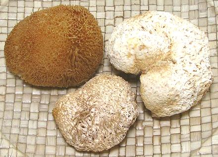
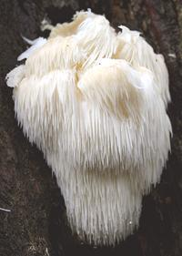
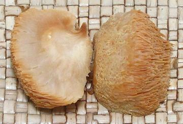

Lion's Mane Mushrooms

[Pom Pom Mushroom, Bearded Tooth Mushroom, Satyr's Beard, Bearded
Hedgehog Mushroom; Hóu Tóu Gu (China, lit. "monkey head
mushroom"); Yamabushitake (Japan, lit. "mountain priest mushroom");
Nam Dau Khi (Viet, lit. "monkey head mushroom"); Norugongdengi-beoseot
(Korea, lit. "Deertail Mushroom"); Hericium erinaceus]
These mushroom, native to temperate zones of North America, Europe and
Asia, are edible and highly medicinal. They are under study for treatment
of a number of serious conditions, including some cancers, Alzheimer's
and nerve damage. They grow on hardwood trees, especially Beech, as
irregular spheres with no stem, covered with long thin soft spines.
Fruiting bodies are rather rare in the wild, and are Red Listed in
much of Europe, but are amazingly easy to produce in cultivation.
They are grown commercially on sterilized sawdust logs and similar
substrates, and harvested young when the spines are still short. The
largest of the photo specimens was 2.7 inches wide and weighed 0.32
ounces (9 gms). The soaked one was much like the dried one lower in
the photo in size and appearance. It weighed 0.18 ounces (5 gms), and
after soaking and wringing out weighed 1 ounce (28 grams).
More on Mushrooms.


To the far left is a mature living specimen growing on a tree. The
spines are for spore production, but commercially they are cloned from
particularly good specimens.
Photo by SKas distributed under license Creative Commons
Attribution-ShareAlike 4.0 International.
To the near left is the soaked specimen from the photo above cut
in half to show internal detail. These mushrooms are of considerable
culinary interest in China. In the Buddhist vegetarian cuisine they
sometimes replace pork in recipes.
Their mild sweet taste is said to make them suitable to replace
lobster in recipes. Now the flavor is intriguing, but I'm not about to
tell you they taste much like lobster. They are quite spongy and
absorb a lot of water, so absorb a lot of flavor from the recipe if you
wring them out before adding them. They are a little tough, though,
especially near the attachment point, so are best cooked sliced fairly
thin.
Buying:
These are fairly popular in Asia, so are
available in some of the larger Asian markets here in Los Angeles,
at around 2016 US $1.28 / ounce.
Storing:
Dried and kept in a sealed container, they
should last at least a year, though their medicinal properties may
decline (data deficient).
Prep:
Soak for about 30 minutes in warm water. Wring
them out after slicing if you want them to pick up a lot of flavor from
the recipe. Of course, the recipe must have enough liquid for them to
absorb.
Cooking:
The recommendation of North American mushroom
hunters is to wring them out dry, then sauté in butter with
some garlic until lightly browned around the edges. In China they are
used mainly in soups, where they are prized as a textural element.
They are also used in a vegetarian mixed mushroom stir fry.
Health & Nutrition
This mushroom is
about 20% protein and is safe to eat, as are its near relatives. It has
many medicinal factors - the most studied are its ability to protect and
help regenerate damaged nerves. It also appears to be useful in cases
of Alzheimer's disease and other neuro degenerative situations - but
dosage must be continued as the effect fades in a few weeks. It has
also shown effectiveness as a mood improver for women suffering from
PMS, and is probably effective against some cancers. This is looking
to be a very useful mushroom, particularly in that it's so easy to
cultivate.
fu_lionmz 081026 - www.clovegarden.com
©Andrew Grygus - agryg@clovegarden.com - Photos
on this page not otherwise credited © cg1
- Linking to and non-commercial use of this page permitted